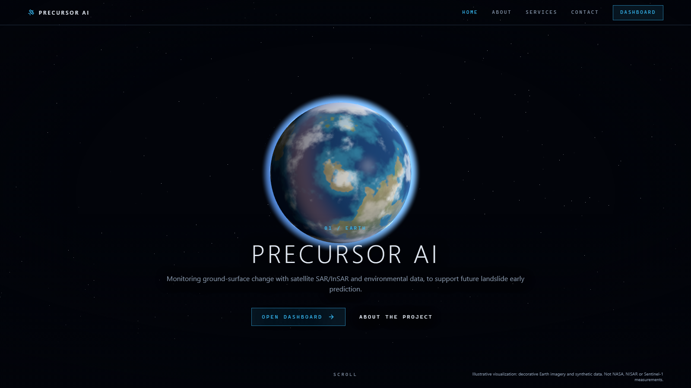
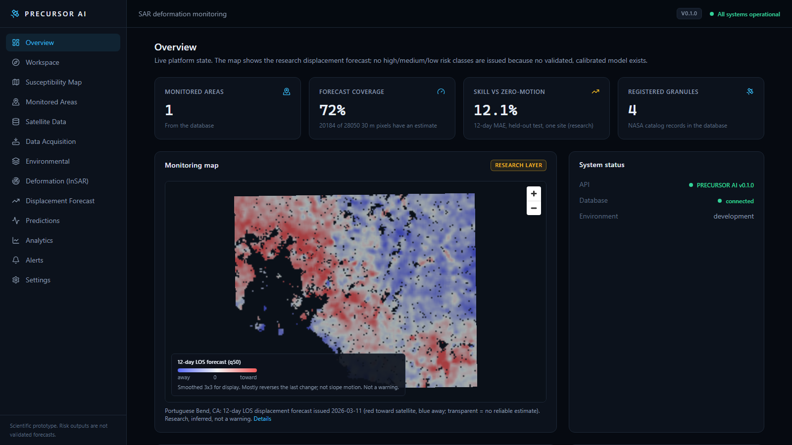
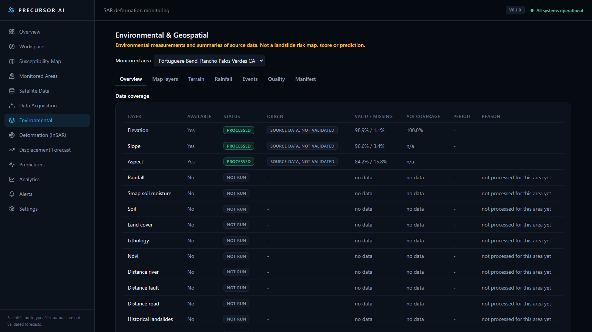

Seeing landslides before they happen, from space.
NASA Space Apps Challenge: “Dancing with the SARs”
One platform that turns NASA radar and environmental data into a landslide early-warning map for any area.
| Source | What it gives us |
|---|---|
| NISAR (L-band radar) | Ground displacement; 12-day repeat |
| NASADEM | Elevation, slope, aspect |
| GPM IMERG | Rainfall |
| SMAP | Soil moisture |
| NASA Global Landslide Catalog | Past landslides |
Test area: Portuguese Bend, CA (187 × 150 px at 30 m). Sentinel-1 OPERA frame F16940, data to 2026-03-11. 237 files, 4.58 GB downloaded.


